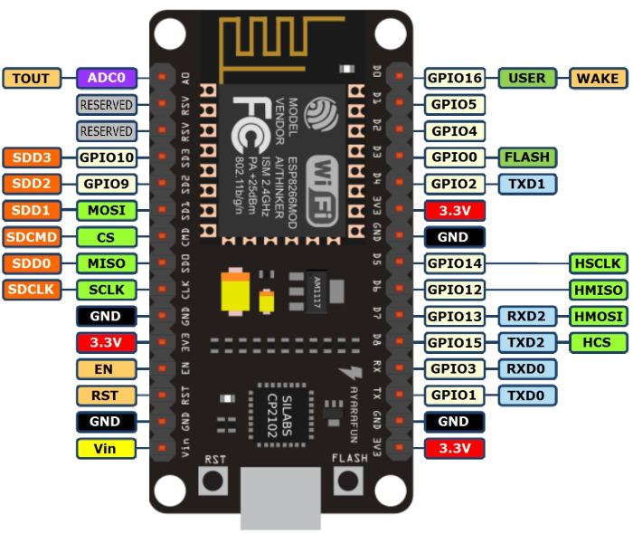
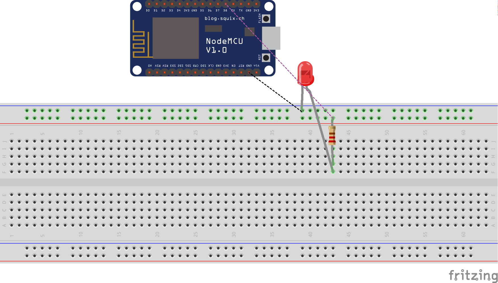
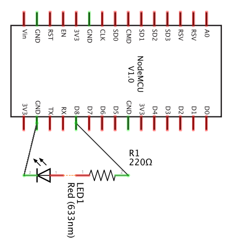

ESP8266
When working with a external hardware such as the NodeMCU you will find a lot of information on the internet about it. It is a bit difficult at times to assess what you need to program it. You are exposed to many choices. A NodeMCU typically comes with Lua. However you have many other choices. Such choices include multiple programming languages such as Lua, MicroPython, Arduino/C, Go and others.
As all of them are slightly different you need to identify which works best for you. In addition you need to install images, programs and libraries that support your specific language choice.
For our first experiments we will be using MicroPython. This choice is motivated by the fact that Python is a well established and easy to learn programming language. Recently many educational institutions are offering Python as an introductory programming language making this choice even mor compelling
To simplify the setup and use of the esp8266 for MicroPython we developed an easy to use commandline tool that allows users to set up their computer and interact more easily with the board. We believe that the interface is so simple that it can also be used in STEM activities and not just in the university or by advanced hobbyists.
Installation
In this section we discuss the various ways on how to set up the esp8266
cloudmesh.robot development environment. You have several options to
install it.
-
Option A: OSX with scripts hosted on github (recommended)
-
Option B: OSX from source
-
Option C: Explore your own
While we provide here a detailed option for OSX, you are free to explore other operating systems. We know that it can for example be installed on Ubuntu 16.04. We have not tested any of this on a Windows machine.
We like to get feedback and Installation instructions.
Option A: OSX install from a Script
For OSX we have created two scripts that you will need
-
system.sh, that installs pip, ansible, homebrew, xcode, virtualenv, readline, wget, lua, picocom, mosquito, aquamacs, pycharm, numpy, matplotlib, libusb, USB drivers for selkected esp8266 (ch34x chip)
-
user.sh, that installs matplotlib, virtualenv, and the cloudmesh source in ~/github
We recommend that you review these scripts carefully before you use them and check if they fit your needs. If they do not, please just download t hem and adapt them to your needs. The system script must be ran on an Administrator account as it requires sudo privileges. The user script must be ran on a User account. We do not recommend to run the IoT software in an administrative account due to security best practices. To execute the system script, type in the Administrator account terminal
$ curl -fsSL http://cloudmesh.github.io/get/robot/osx/system | sh
As earlier versions of pip may have some issues, this script will also update pip and setuptools to a newer version
To execute the user script, type in the User account terminal
$ curl -fsSL http://cloudmesh.github.io/get/robot/osx/user | sh
Together these scripts allow you to install in a simple way development tools for our IoT activities.
The following steps are to be executed in the user environment.
Warning: the scripts do not update pip and setuptools, which may be required due to a bug in setuptools prior to version 34 for setuptools. You may have to repeat the update on any pyenv environment that you use. How to do thi sis documented in a later section.
To simplify use, we recommend that you make the following additions to
your ~/.bash_profile file so that python 3 is automatically activated,
but does not interfere with the system installed python. Use the command
$ emacs ~/.bash_profile
or your favourite editor to edit the file and add the following lines at the end.
#######################################################################
# PYENV
######################################################################
open_emacs() {
# open -na Aquamacs $*
open -a Aquamacs $*
}
alias e=open_emacs
########################################################
# PYENV
########################################################
export PYENV_VIRTUALENV_DISABLE_PROMPT=0
eval "$(pyenv init -)"
eval "$(pyenv virtualenv-init -)"
__pyenv_version_ps1() {
local ret=$?;
output=$(pyenv version-name)
if [[ ! -z $output ]]; then
echo -n "($output)"
fi
return $ret;
}
PS1="\$(__pyenv_version_ps1) ${PS1}"
alias ENV3="pyenv activate ENV3"
ENV3
Once you start a new terminal you can edit files via aquamacs by typing
$ e FILENAME
where FILENAME is the name of the file you like to edit. However the file must exists, which you can simply do with
touch FILENAME
Add the following lines at the end of the file
To learn more about how to you automate the setup of an OSX machine, you may be inspired by
-
https://github.com/ricbra/dotfiles/blob/master/bin/setup_osx
-
https://blog.vandenbrand.org/2016/01/04/how-to-automate-your-mac-os-x-setup-with-ansible
Setting Up Git
Sooner or later you will be using git. We recommend that you set your identity on all computers that you will be using. To do this adapt the following example according to your github.com identity that you have. IF you do not, its time to greater one at github.com and follow the directions.
$ git config --global user.name "Gregor von Laszewski"
$ git config --global user.email laszewski@gmail.com
$ git config --global core.editor emacs
$ git config --global push.default matching
Option B: setup from pip
We have removed the pip setup instructions as they do not include installing the drivers.
Option B: Install Cloudmesh Robot from source
Developers that already have a development environment (e.g. xcode is installed) can install cloudmesh robot also from the terminal while downloading the source. You will need to first obtain the source and compile it with the following commands:
$ mkdir github
$ cd github
$ git clone https://github.com/cloudmesh/cloudmesh.common.git
$ git clone https://github.com/cloudmesh/cloudmesh.cmd5.git
$ git clone https://github.com/cloudmesh/cloudmesh.robot.git
$ cd cloudmesh.robot
$ make source
To test out if the command has been installed, type
$ cms robot welcome
If everything works you should see an ASCII image of R2D2 and C3PO. Next, we still have to install some additional programs before you can use other commands.
Once you have installed cloudmesh robots you well be able to install a number of tools automatically with the command
$ cms robot osx install
This will install services and tools including xcode, homebrew, macdown, pycharm, and aquamacs. If you have some these tools already installed it will skip the Installation process for a particular tool. Please note that some of the tools require root access and thus you must be able to have access to sudo to run them from our tool. In addition you will need to install the OSX driver for the USB interface to the esp8266. This is achieved with (only to be done if you follow the install from source option)
$ cms robot osx driver
Now please change your account to be again a standard account.
Now you MUST REBOOT the machine. Without rebooting you will not be able to use the USB drivers.
Option C: A possible setup for Linux
On a linux computer we recommend that you install emacs, cmake and configure your git. Replace the user name and e-mail with the once that you used to register your account in git:
$ mkdir github
$ cd github
$ git clone https://github.com/cloudmesh/cloudmesh.robot.git
$ ssh-keygen
$ sudo apt-get install -y emacs
$ sudo apt-get install -y cmake
$ sudo apt-get install -y libqt4-dev
$ git config --global user.name "Gregor von Laszewski"
$ git config --global user.email laszewski@gmail.com
$ git config --global core.editor emacs
$ git config --global push.default matching
This setup is highly incomplete and does not include the setup of the USB drivers. Please help us completing the documentation.
Option C: A possible setup for Windows
We do not have tried to set this up on Windows or a virtualbox running Linux under windows. If you have tried it, please let us know. If you have difficulties just use a raspberry PI and skip the IoT projects
Option C: Installation of the cloudmesh.robot Interface via Pip
.. warning:: this option does not include installing the USB drivers. You have to install them first. See examples on how to do that in our install scripts. Generally what we do in our user.sh script is the same way, but also includes the setup of python 3.6.1.
To more easily interface with the robot we have developed a convenient program that is installed as part of a command tool called cloudmesh.
Install Cloudmesh Robot with Pip (not working)
Note that pip may not include the newest version of cloudmesh.robot and we recommend you use the source install instead.
$ pip install cloudmesh.robot
This will install a program cms on your computer that allows you to
easily communicate with the robot.
Using cloudmesh robot
Once you have successfully installed the drivers and the commands you can look at the manual page of the robot command with
$ cms robot help
You will see a manual page like this:
Usage:
robot welcome
robot osx install
robot osx driver
robot image fetch
robot probe [--format=FORMAT]
robot flash erase [--dryrun]
robot flash python [--dryrun]
robot test
robot run PROGRAM
robot credentials set SSID USERNAME PASSWORD
robot credentials put
robot credentials list
robot login
robot set PORT NOT IMPLEMENTED
robot ls [PATH]
robot put [-o] SOURCE [DESTINATION]
robot get PATH
robot rm PATH
robot rmdir PATH
robot dance FILE IPS
robot inventory list [--cat] [--path=PATH] [ID]
Testing the board
Before you can use you ESP8266, you must have the appropriate drivers installed on your computer. Click on this link and follow the instructions on how to install these drivers.
Next is to connect a esp8266 with a USB cable to the computer. The ESP8266 should look similar to this.
After you connected it, press the reset button. Before doing anything on the board, we must test it. Once you have plugged it in, execute the following command:
$ cms robot probe
This command takes about ten seconds to execute. The ESP8266’s led should flash irregularly as it is probed. When the probe is finished, an image similar to the following should appear in your terminal:
+-----------+---------------------------+
| Attribute | Value |
+-----------+---------------------------+
| chipid | b' 0x00d0f9ec' |
| mac | b' 00:10:FA:6E:38:4A' |
| tty | /dev/tty.wchusbserial1410 |
+-----------+---------------------------+
Please note that you should only have one board attached to your computer.
Flashing the image onto the robot board
Next we need to flash the image on the robot board. Naturally we need to fetch the image first from the internet. We do this with the command
$ cms robot image fetch
This will fetch an image that contains MicroPython into your local directory.
Next we need to flash the image on the board.
Before you begin, make sure that the ESP8266 is connected to your computer. The board may come with a pre-installed image such as Lua or some custom image from the vendor. In order to write programs in python, we need to the chips to run micropython. To get micropython on our ESP8266’s, a number of steps are required.
Erase the chip
First we need to erase the chip.
Run the following command in your terminal terminal, and then stop.
$ cms robot flash erase
Your terminal should respond with the following query:
/dev/tty.SLAB_USBtoUART
Please press the right buttons
continue? (Y/n)
Before taking any further steps, press both buttons on the ESP8266 at
the same time. Once you have done this, type Y and press enter. The
process should take under ten seconds to complete.
Putting Python on the chip
Before proceeding, you must once again press both of the buttons on the ESP8266. Once this is done, you are ready to flash the chip with python with the following command:
$ cms robot flash python
Testing if it works
To test running a python program execute
$ cms robot test
Be careful as it overwrites the file test.py. If the ESP8266 is set up
properly, it should return this in your terminal:
Count to 3
1
2
3
Execute an arbitrary program
Lets assume you have placed a program in the file prg.py with the
command
$ cms robot put prg.py
You must reboot the ESP8266 before using a new program. This can be done manually by pressing the reset button on the chip, or in terminal with the command
$ cms robot reset
Once the chip is reset, you can run prg.py with the following command:
$ cms robot run prg.py
Interactive Python shell on the board
To get into the interactive python shell on the board you need to reset the ESP8266 and run the following command:
$ cms robot login
Cleaning an reinstalling a development version
IN case you are a developer and you need to modify the source code, we found that it is sometimes necessary to clean your development directory and libraries. The easiest way to do this is to go to the repository that you like to reinstall. Let us assume it is cloudmesh.robot. Than the following commands will clean the repository
$ cd cloudmesh.robot
$ pip uninstall cloudmesh.robot
Do the pip uninstall as many times till you see an error that no more cloudmesh.robot versions can be found. Than execute
$ make clean
After this you can reinstall it with
$ python setup.py install; pip install -e .
the -e flag is optional, but allows you to change the code without the need of recompiling. A very useful feature in python.
NodeMCU ESP12 Dev Kit Pin Definition
For V1.0

The GPIO numbers of teh NodeMCU, do not correspond with the actual numbers used in micropython’s pin library. The numbers are as follows:
Pin/GPIO NodeMCU
15 D8
LED
To switch on and of the LED you can use
import machine
led = machine.Pin(15,machine.Pin.OUT)
led.high()
led.low()
To blink youcan use
import machine
led = machine.Pin(15,machine.Pin.OUT)
while True:
led.high()
time.sleep(0.5)
led.low()
time.sleep(0.5)


Real Time Clock
Get the library urtc.py:
$ wget https://raw.githubusercontent.com/adafruit/Adafruit-uRTC/master/urtc.py
Place it on the esp8266
$ cms robot put urtc.py
Connect the board the following pins
SDA to pin 5 = D1
SCL to pin 4 = D2
Login to the board
$ cms robot login
Execute the following code
import machine
i2c = machine.I2C(sda=machine.Pin(5), scl=machine.Pin(4))
i2c.scan()
> [87, 104]
from urtc import DS3231
t = DS3231(i2c)
t.datetime()
> DateTimeTuple(year=2000, month=1, day=1,
> weekday=1, hour=0, minute=15,
> second=53, millisecond=None)
Assignment: Create an object oriented class and fill out the details
while using code from urtc.py
class Clock (object):
def __init__(self, sda=5, scl=4):
pass
def get(self):
pass
def __str__(self):
pass
c = Clock()
print (c.get())
print (c)
Resources
$ https://github.com/adafruit/Adafruit-uRTC/blob/master/urtc.py
$ git clone https://github.com/adafruit/Adafruit-uRTC.git
Alternative boards
HUZZAH Feather esp8266
Many different 8266 based alternative boards exist. One of these boards is the HUZZAH Feather. IT behaves the same as the other boards, but ay be using different drivers and USB ports. The cms robot command line tool is clever enough to identify automatically if it is attached and uses the appropriate settings. More documentation about this board can be found at
This site has also many other examples and you can search for them with keywords such as feather, esp8266, micropython.
An example on how to use the LED on the feather is documented at
To place micropython on the feather you can plug in the to the usb port. The good thing about this board is that you do not need to press any buttons as it detects the upload nicely. If not make sure to reset it or for flashing press both buttons. You can do the following:
Probe the board with:
$ cms robot probe
Erasing the feather is simple as it has a build in mechanism to detect if it is going to be erased. Hence no reset button needs to be pressed:
$ cms robot flash erase
Get the python image:
$ cms robot fetch python
Flashing is conducted with 460800 baud, it will take about 15 seconds. After flashing you should try to login:
$ cms robot login
Set the boudrate to 115200:
CTRL-A CTRL-B>
*** baud:
```
type in:
115200 <ENTER>
Make sure that echo is switched to OFF:
CTRL-A CTRL-C
```
toggles it. Now you should see:
>>>
Try typing in:
print("Hello")
Appendix
Installing ESP8266 USB drivers
We provide here a section to explain which drivers we have tested on various esp8266. Please note that if you have different versions you may need different drivers. On OSX we found that we get good results with the following commands
$ brew tap mengbo/ch340g-ch34g-ch34x-mac-os-x-driver https://github.com/mengbo/ch340g-ch34g-ch34x-mac-os-x-driver
$ brew cask install wch-ch34x-usb-serial-driver
Start a new terminal after the driver has finished installing.
$ wget http://www.silabs.com/Support%20Documents/Software/Mac_OSX_VCP_Driver.zip
$ unzip Mac_OSX_VCP_Driver.zip
Click on the driver install file contained inside the zip file and the driver should start installing. Once the driver has finished installing, make sure to start a new terminal.
Please remember that you need to close all terminals, as well as reboot the computer to use the drivers. They will typically not work if you have not rebooted.
For other boards that also use the CH340G chip the following page may help: